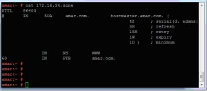

Configure DNS
Rpm needs à bind-9.3.3-7.el5
1. service should be started with command.
/etc/init.d/named start
To start the service on booting time run the below command.
chkconfig named on
3. enter the nameserver in /etc/resolve.conf file
as nameserver 172.16.34.60
4. if you want to use chroot security for ur dns then install the chroot rpm for your linux. bind-chroot-9.2.3-13
5. the main configuration file is named.conf file which present in the /etc location /etc/named.conf if it is not present then copy it from /usr/share/doc/bind-9.3.3/sample/etc/named.conf named.conf to /etc/named.conf file contain the zone file information.
Cache server
6. If u want to configure cache server then u have to copy another file from /usr/share/doc/bind-9.3.3/sample/etc/named.rfc1912.zones this file is call by keyword include which is present in named.conf file under view "localhost_resolver" as a include "/etc/named.rfc1912.zones";
view "localhost_resolver"
{
/* This view sets up named to be a localhost resolver ( caching only nameserver ).
* If all you want is a caching-only nameserver, then you need only define this view:
*/
match-clients { localhost; };
match-destinations { localhost; };
recursion yes;
# all views must contain the root hints zone:
include "/etc/named.root.hints";
/* these are zones that contain definitions for all the localhost
* names and addresses, as recommended in RFC1912 - these names should
* ONLY be served to localhost clients:
*/
include "/etc/named.rfc1912.zones";
};
Authoritative or regular DNS server
7. In regular dns configuration you don’t need to configure localhost resolver view and you don’t need the named.rfc1912.zones file in this case we have to configure only named.conf file
acl "safe-subnet" { 172.16.33.0/23; };
view "internal"
{
/* This view will contain zones you want to serve only to "internal" clients
that connect via your directly attached LAN interfaces - "localnets" .
*/
match-clients { localnets; safe-subnet; };
match-destinations { localnets; safe-subnet; };
recursion yes;
// all views must contain the root hints zone:
include "/etc/named.root.hints";
// include "named.rfc1912.zones";
// you should not serve your rfc1912 names to non-localhost clients.
// These are your "authoritative" internal zones, and would probably
// also be included in the "localhost_resolver" view above :
zone "34.16.172.in-addr.arpa" IN {
type master;
allow-query { any; };
file "172-16-33.zone";
allow-update { none; };
};
zone "amar.com" IN {
type master;
allow-query { any; };
file "amar.zone";
};
};
Reverse lookup configuration
zone "34.16.172.in-addr.arpa" IN {
type master;
allow-query { any; };
file "172-16-33.zone";
allow-update { none; };
};
Forward lookup configuration
zone "amar.com" IN {
type master;
allow-query { any; };
file "amar.zone";
};
By default zone files are reside in /var/named/ directory if the sample files are not present then you can copy it from /usr/share/doc/bind-9.3.3/sample/var/ to /etc/named/
Forward Zone file format
Amar.zone
Reverse zone file
172-16-34.zone

Chroot configuration
For chroot configuration we have to place named.conf file in location
/var/named/chroot/etc/
And zone files should be placed at /var/named/chroot/var/named/ location
Just restart the named service.
{kind=link}
{kind=link}